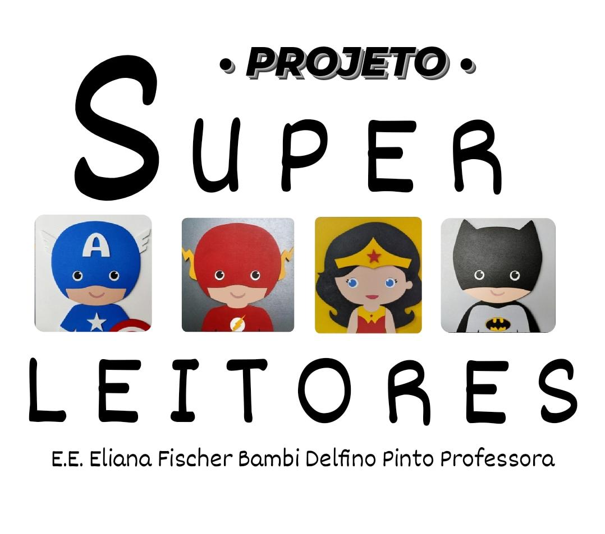
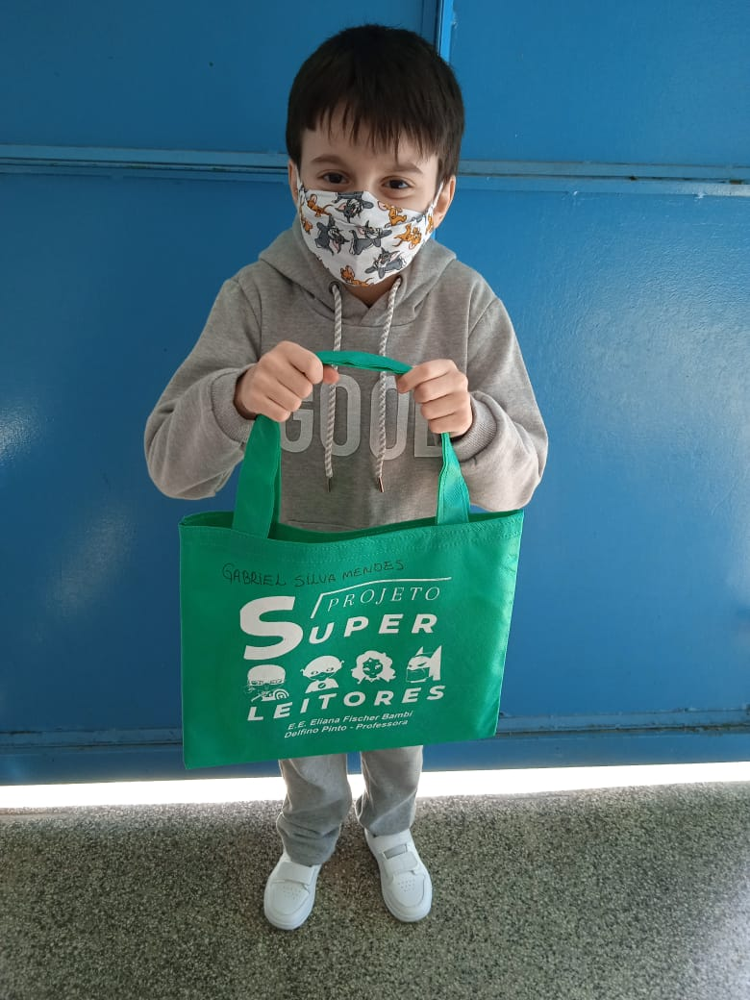
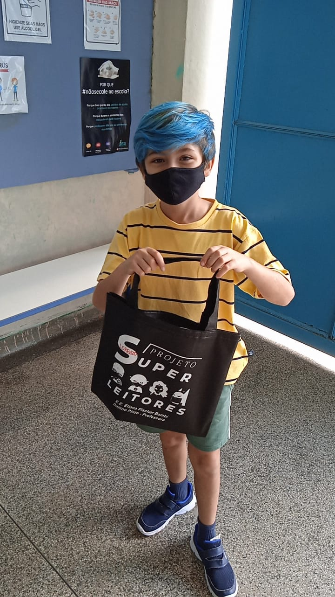
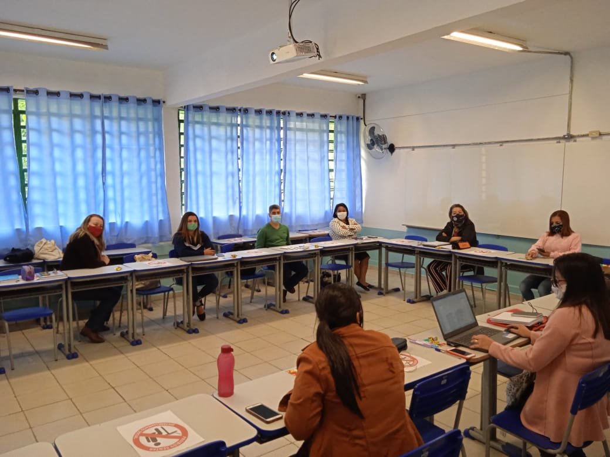
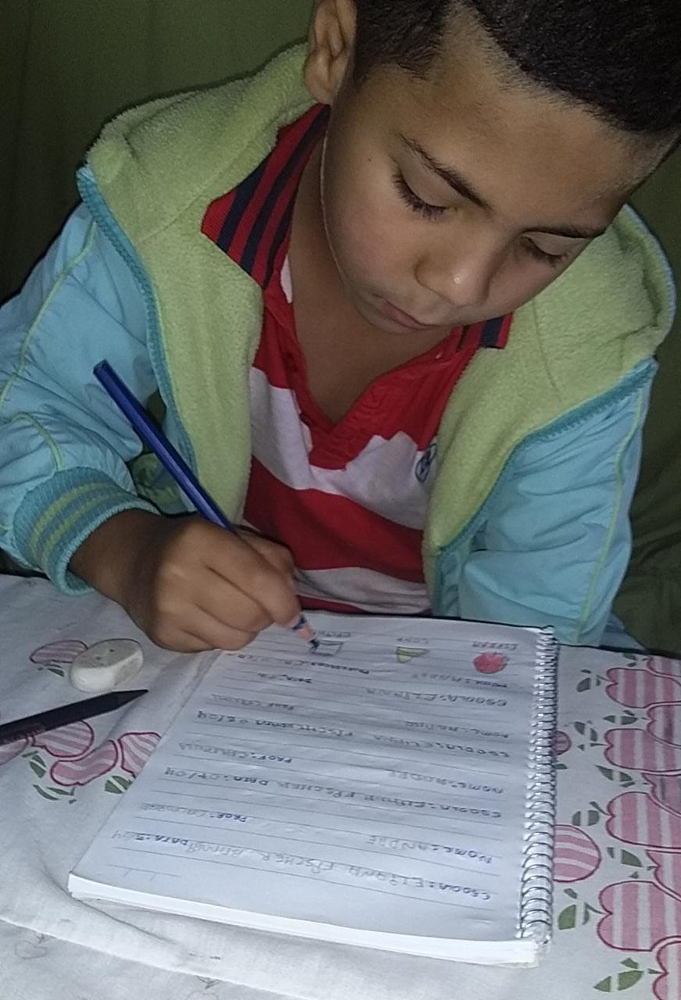
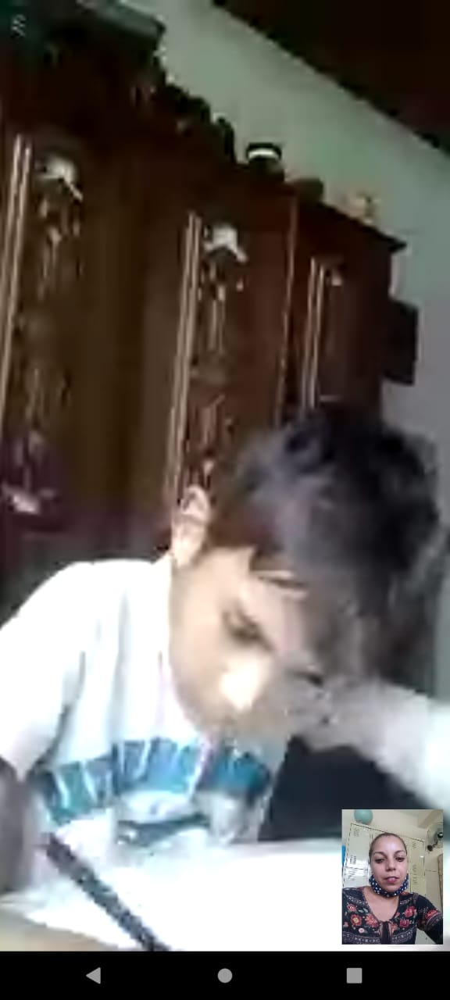
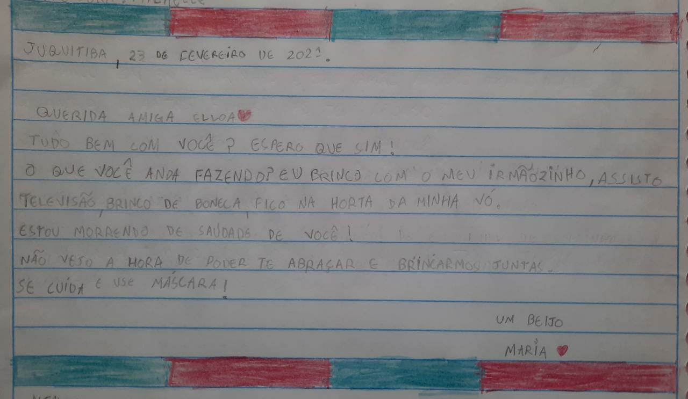
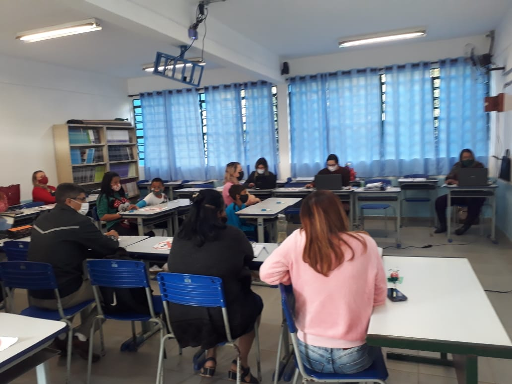
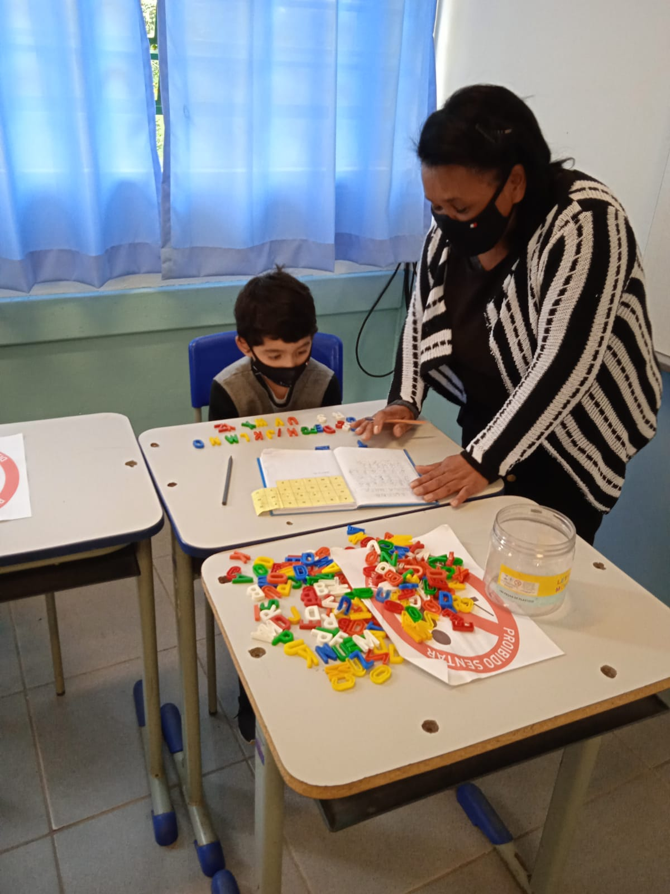

Ação: Retomar o projeto de leitura com foco no baixo rendimento em Língua Portuguesa nos Anos Iniciais para incentivar e desenvolver a leitura e a compreensão leitora com autonomia.
Etapa: Entregando os livros rotativamente aos alunos e acompanhando a realização das leituras e feedback dos alunos.


Gabriel Silva Mendes - 2° Ano

Lorenzo Hardt Roncada - 4° Ano
Etapa: Apresentando o projeto de leitura aos educandos o repertório dos livros selecionados.
Professora Michelle Rigotti - 3° Ano
Ação: Intensificar as ações da escola com foco na recuperação e nos descritores do nível 4 da escala de proficiência de Língua Portuguesa nos Anos Iniciais.
Etapa: Socializando entre os professores o processo de alfabetização, ao final de cada bimestre no conselho de classe/série.

Etapa: Elaborando atividades adaptadas de recuperação com foco na alfabetização, a partir das habilidades essenciais do 1º e 2º ano.

André Luiz do 1° Ano - Profª Calmirante
Etapa: Identificando nos estudantes através da sondagem, o nível de proficiência escritora de cada um para o mapeamento da classe de acordo com as hipóteses de escrita de cada ano.

Daniel Berreta do 2° Ano - Profª Alcione Oliveira

Sondagem da aluna Maria Isadora do 3° Ano - Profª Michelle Rigotti
Ação: Aprimorar as ações com foco no desenvolvimento das habilidades socioemocionais para melhorar a autonomia e o desempenho dos estudantes dos Anos Iniciais em Língua Portuguesa.
Etapa: Trabalhando a metodologia ativa "mão na massa" para desenvolvimento da autonomia dos estudantes.
Felipe Santos Medeiros do 5° Ano - Profª Maria Rocha
Socializando entre os professores o processo de alfabetização, ao final de cada bimestre no Conselho de Classe / Série.

Elaborando atividades adaptadas de recuperação com foco na alfabetização, a partir das habilidades essenciais do 1° e 2° Ano.

Artur Jesus dos Passos do 1° Ano - Profª Calmirante
Entregando os livros rotativamente aos alunos e acompanhando a realização das leituras e feedback dos alunos.
Gabriel Galdino do 2° Ano - Profª Alcione